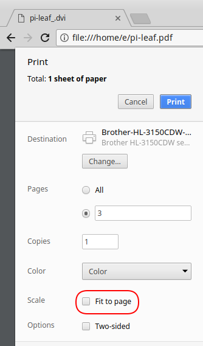

Ein Problem, das beim Aufbauen von Schaltungen immer wieder vorkommt, ist die unbeschriftete GPIO-Leiste des Raspberry Pi. Das Zählen der GPIO-Kontakte ist ein typischer Vorgang, wenn man mit den Ein- und Ausgängen arbeitet. Abhilfe können Beschriftungen bzw. Vorlagen schaffen, die man über die GPIO-Stiftleiste steckt.
Erstellung
Die GPIO-Kontakte der Raspberry sind nicht beschriftet. Es werden im einschlägigen Handel Beschriftungskarten, sie werden auch als Referenzkarten (“Reference Card”) bezeichnet, angeboten. Man steckt sie über die GPIO-Steckerleiste. Diese Referenzkarten müssen natürlich nicht aus einem harten Material bestehen. Sie können, mit etwas Handarbeit, auch leicht selbst aus Papier hergestellt werden. Sie werden ausgedruckt und dann zurecht geschnitten. Die Löcher kann man z. B. mit einem Nagel vorstechen. Solche PDF-Vorlagen gibt es vielfach im Internet zu finden z. B. http://noxmiles.de/Raspberry-Pi-GPIO-Beschriftung.pdf. Eine besondere Möglichkeit bietet hier das Projekt Pi Leaf https://www.raspberrypi.org/blog/raspberry-leaf. Dabei wurde die Zeichnung nicht in einem Grafikprogramm erzeugt, sondern über eine Beschreibungssprache definiert. Ursprünglich wurde das Projekt auf Dr. Monk’s DIY Electronics Blog beschrieben und auf Sourceforge publiziert.
Für das veraltete Projekt wurde ein Fork von “Sanderr” auf Sourceforge erstellt. Diese Version enthält auch eine Vorlage für den 40-Pin Anschluss der aktuellen Raspberry Pi Varianten. Aus der Beschreibungsdatei “pi-leaf.asy” kann mit dem Programm Asymptote die PDF-Datei erstellt werden.
sudo apt-get install asymptote git
cd /usr/src/
git clone git://git.code.sf.net/u/sanderr/pileaf u-sanderr-pileaf
cd u-sanderr-pileaf
asy -f pdf pi-leaf.asy
Eine bereits erstellte PDF-Vorlagedatei kann von unserer Homepage unter http://raspjamming.at/PDF/pi-leaf.pdf heruntergeladen werden. Beim Ausdrucken (z. B. mit dem Browser Chrome) muss unbedingt die Einstellung “Seitengröße anpassen” bzw. “Fit to page” deaktiviert werden!
